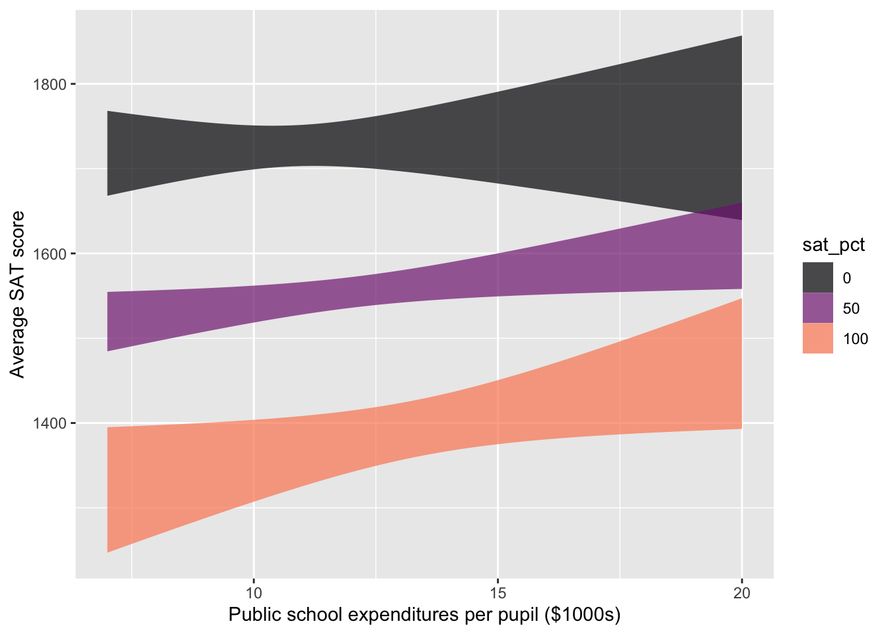

To illustrate how covariates set context, consider an issue of interest to public policy-makers in many societies: How much money to spend on children’s education? State lawmakers in the US are understandably concerned with the quality of public education provided. However, they also have other concerns and constraints and constituencies who give budget priority to other matters.
In evaluating their various trade-offs, lawmakers could benefit by knowing how increased educational spending will shape educational outcomes. What can available data tell us? Unfortunately, there are various political constraints that work against states adopting and publishing data on a standard, genuine measure of educational outcome. Instead, we have high-school graduation rates, student grades, and other non-standardized data. These data might have some meaning but can also reflect system gaming by administrators and teachers.
Although imperfect, college admissions tests such as the ACT and SAT provide consistent data between states. For example, Figure 1 shows the average SAT score in 2010 in each state versus expenditures per pupil in public elementary and secondary schools. Layered on top of the data is a flexible linear model (and its confidence band) of SAT score versus expenditure.
The overall impression given by the model is that the relationship is negative, with lower expenditures corresponding to higher SAT scores. However, the confidence band is broad; it is possible to find a smooth path with almost zero slope through the confidence band. Either way, this graph does not support the conventional wisdom that higher spending produces better school outcomes.
Code
data(SAT_2010, package ="mdsr")mod_1 <- SAT_2010 |>model_train(total ~ expenditure)model_plot(mod_1, interval ="confidence") |>gf_point(total ~ expenditure, point_ink =0.5, data = SAT_2010, inherit=FALSE) |>gf_labs(y ="Average SAT score", x ="Public school expenditures per pupil ($1000s)")
Figure 1: State by state data (from 2010) on average SAT college admissions test scores and expenditures for public education.
Of course, other factors play a role in shaping education outcomes: for instance, poverty levels, parental education, and how the educational money is spent (higher pay for teachers or smaller class sizes? administrative bloat?).
At first glance, it is tempting to ignore these additional factors, particularly if we do not have data on them. Moreover, as our interest is in understanding the relationship between expenditures and education outcomes, we are not directly concerned with the additional factors. However, the lack of direct concern does not imply that we should ignore the factors but that we should do what we can to “hold them constant”.
To illustrate, consider the fraction of eligible students (those in their last year of high school) who take the college admission test. This fraction varies widely from state to state. In a poor state where few students go to college, the fraction can be tiny (Alabama 8%, Arkansas 5%, Mississippi 4%, Louisiana 8%). In some other states, the large majority of students take the SAT (Maine 93%, Massachusetts 89%, New York 89%). In states with low SAT participation rates, the students who take the test tend to be those applying to schools with competitive admissions. Such strong students will get high scores. In contrast, the scores in states with high participation rates reflect both strong and weak students. Consequently, the scores will be lower on average than in the low-participation states.
Putting the relationship between expenditure and SAT scores in the context of the fraction taking the SAT is accomplished with the model SAT ~ expenditure + fraction rather than just SAT ~ expenditure. Figure 2 shows a model with fraction as a covariate.
Code
mod <- SAT_2010 |>model_train(total ~ expenditure * sat_pct)model_plot(mod, interval ="confidence") |>gf_labs(y ="Average SAT score", x ="Public school expenditures per pupil ($1000s)")

Figure 2: The model of SAT score versus expenditures, including as a covariate the fraction of eligible students in the state who take the SAT.
Note that the effect size of spending on SAT scores is positive when the expenditure level is less than $10,000 per pupil. Notice as well that when the fraction taking the SAT is tiny, the average scores do not depend on expenditure. This flat relationship suggests that, among elite students, state expenditure does not make a discernible difference. Perhaps the college-bound students in such states have other educational resources to draw on.
The relationship shown in Figure 1 is genuine. However, so is the different relationship seen in Figure 2. How can the same data be consistent with two utterly different displays? The answer, perhaps unexpectedly, has to do with the connections among the explanatory variables. Whatever the relationship between an individual explanatory variable and the response variable, the appearance of that relationship will depend on which covariates the modeler chooses to include.
A medical example
This news report appeared in 2007:
Heart Surgery Drug Carries High Risk, Study Says. A drug widely used to prevent excessive bleeding during heart surgery appears to raise the risk of dying in the five years afterward by nearly 50 percent, an international study found. The researchers said replacing the drug—aprotinin, sold by Bayer under the brand name Trasylol—with other, cheaper drugs for a year would prevent 10,000 deaths worldwide over the next five years.
Bayer said in a statement that the findings are unreliable because Trasylol tends to be used in more complex operations, and the researchers’ statistical analysis did not fully account for the complexity of the surgery cases. The study followed 3,876 patients who had heart bypass surgery at 62 medical centers in 16 nations. Researchers compared patients who received aprotinin to patients who got other drugs or no antibleeding drugs. Over five years, 20.8 percent of the aprotinin patients died, versus 12.7 percent of the patients who received no antibleeding drug. [This is a 64% increase in the death rate.] When researchers adjusted for other factors, they found that patients who got Trasylol ran a 48 percent higher risk of dying in the five years afterward. The other drugs, both cheaper generics, did not raise the risk of death significantly. The study was not a randomized trial, meaning that it did not randomly assign patients to get aprotinin or not. In their analysis, the researchers took into account how sick patients were before surgery, but they acknowledged that some factors they did not account for may have contributed to the extra deaths. - Carla K. Johnson, Associated Press, 7 Feb. 2007
“Significant” has a specialized meaning in statistical language. It is not a synonym for “important.” See Lessons 36 through 38
The report involves several variables. Of primary interest is the relationship between (1) the risk of dying after surgery and (2) the drug used with the goalo of preventing excessive bleeding during surgery. Also potentially important are (3) the complexity of the surgical operation and (4) how sick the patients were before surgery. Bayer disputes the published results of the relationship between (1) and (2) holding (4) constant, saying that it is also essential to hold variable (3) constant.
The total relationship involves a death rate of 20.8 percent of patients who got aprotinin versus 12.7 percent for the patients taking the generic drugs: an increase in the death rate by a factor of 1.64. However, when the researchers looked at a partial relationship (holding constant patient sickness before the operation), the effect size of aprotinin on mortality was less: a factor of 1.48. In other words, the model death ~ aprotinin shows a 64% increase in the death rate, but the model death ~ aprotinin + sickness shows a slightly smaller increase in death rate: 48%. The difference between the two estimates reflects doctors being more likely to give aprotinin to sicker patients.
The story’s last paragraph states that the choice of patients receiving aprotinin versus the generic drugs was not made at random. Some readers may find this reassuring. Why in the world would anyone prescribe a drug at random? The point, however, is to select randomly who gets which drug among the patients for whom the drugs would be appropriate. The phrase “randomized trial” used in the paragraph means specifically an experiment in which one treatment or the other—aprotinin versus the generic drugs—is assigned at random. The virtues of experiment and the vital role of random assignment are detailed in Lesson 26.
Latin
Different fields use their own vocabulary. For instance, in economics the phrase ceteris paribusis often used. Engaging such vocabulary in statistics helps students see the relevance to their own field of interest.*
Using covariates in models enables the relationship between a response and an explanatory variable to be described ceteris paribus, that is, “all other things being equal.” Another phrase used in news stories is “after adjusting for ….” This is appropriate since the all in “all other things” is, in reality, refers only to those particular factors used as the covariates in the model. Dr. Meyer’s foot width results might be stated in everyday language as, “After adjusting for foot length, she found no difference in the widths of girls’ and boys’ feet.”
Not including covariates in a model amounts to “letting other things change as they will.” In Latin, this is “mutatis mutandis.” In the foot-width example, the model width ~ sex looks at the differences in foot width for the two sexes. However, sex is not the only thing associated with foot width. The model width ~ sex ignores all other factors than sex; it compares boys and girls mutatis mutandis, that is, letting other things change as they will. In this case, comparing boys and girls involves not just the possible differences in foot width but also the differences in other factors such as foot length and body weight.
Example: One change can bring another
Here’s an economics/management related story about mutatis mutandis.
I was once involved in a budget committee that recommended employee health benefits for the college where I worked. At the time, college employees who belonged to the college’s insurance plan received a generous subsidy for their health insurance costs. Employees who did not belong to the plan received no subsidy but were given a modest monthly cash payment. After the stock market crashed in 2000, the college needed to cut budgets. One proposal called for eliminating the cash payment to employees who did not belong to the insurance plan. Proponents of the plan claimed that this would save money without reducing health benefits. I argued that this claim was an “all other things being equal” analysis: how expenditures would change assuming the number of people belonging to the insurance plan remained constant. In reality, however, the policy change would play out mutatis matandis; the loss of the cash payment would cause some employees, who currently received health benefits through their spouse’s health plan, to switch to the college’s health plan. That is what happened, contributing to an overall increase in healthcare expenses.